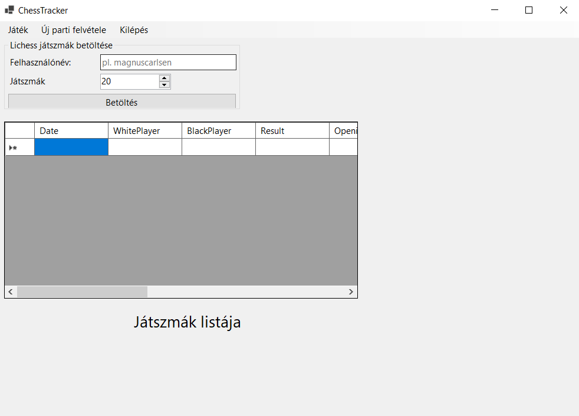
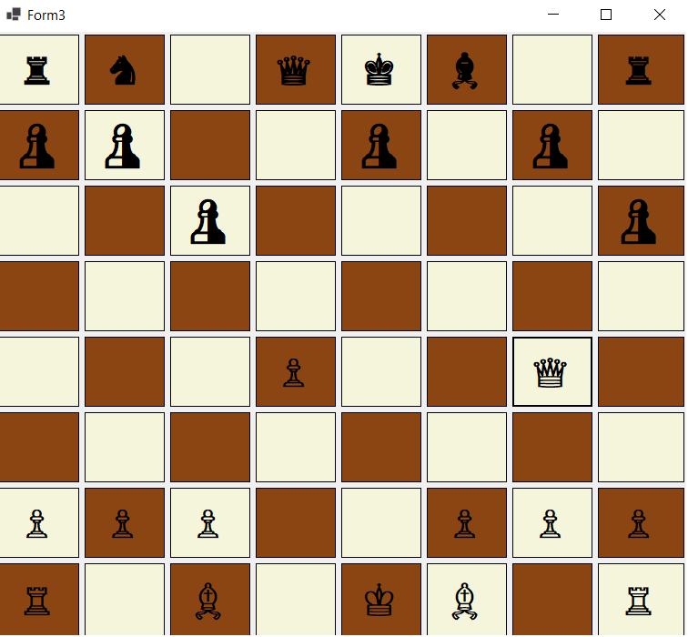
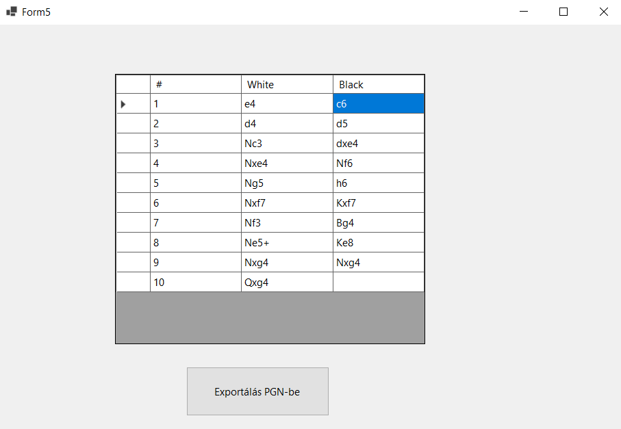
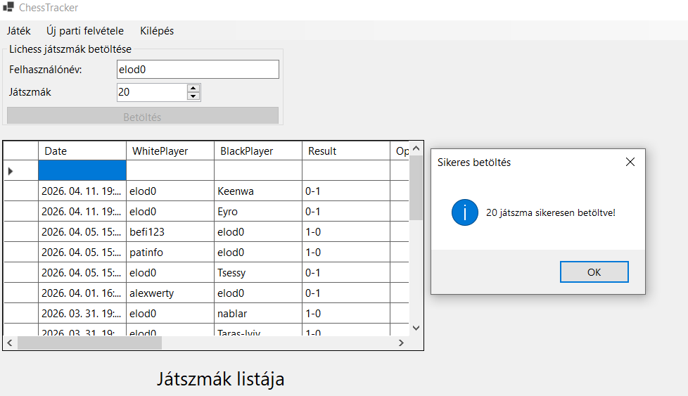
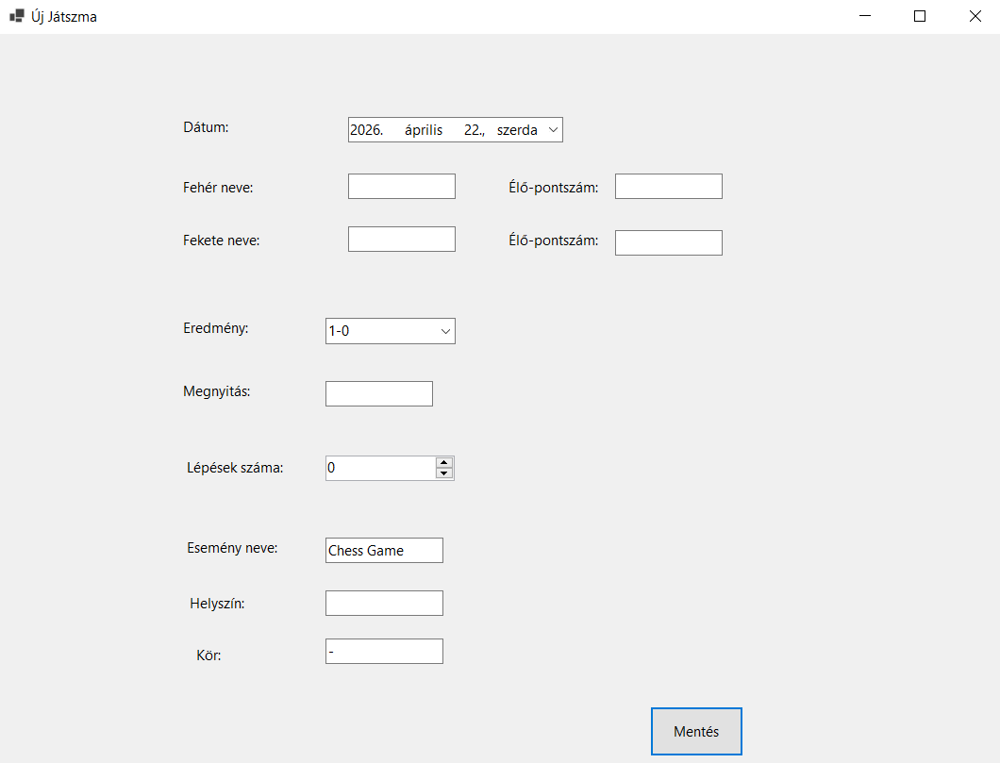
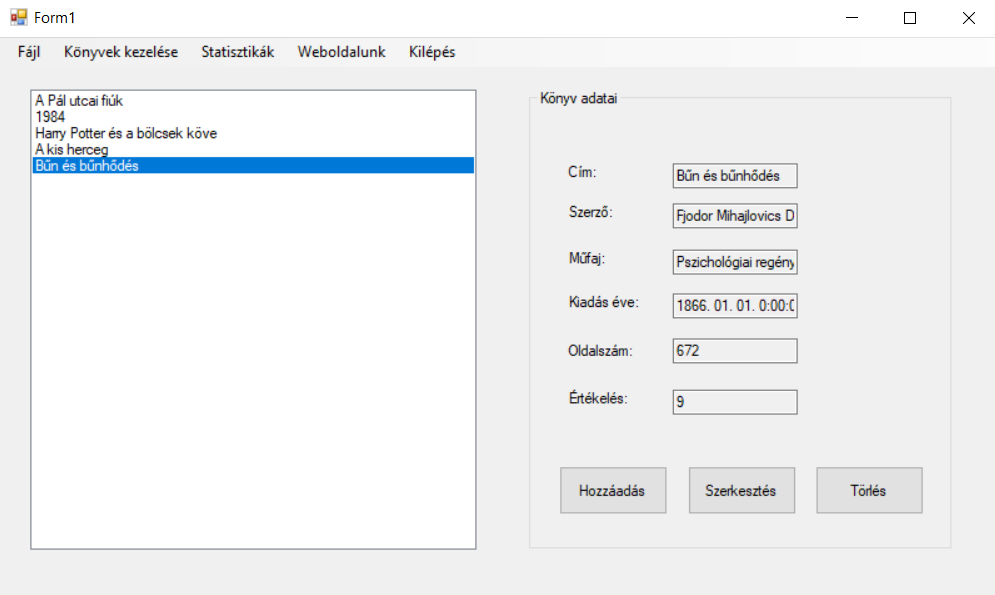
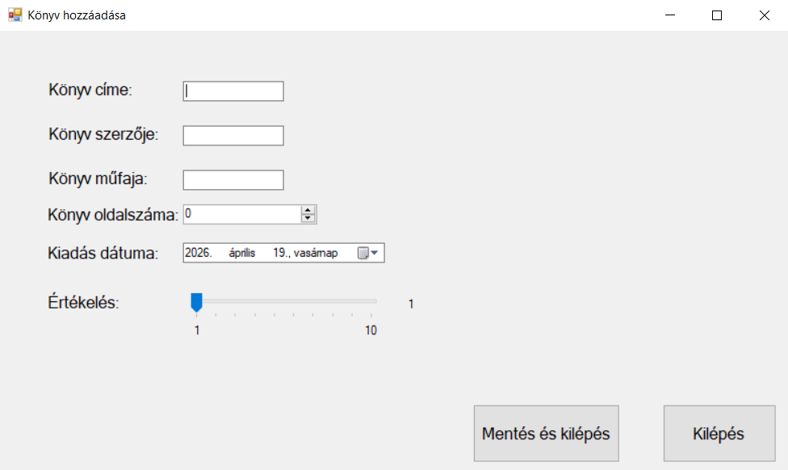
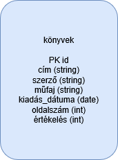
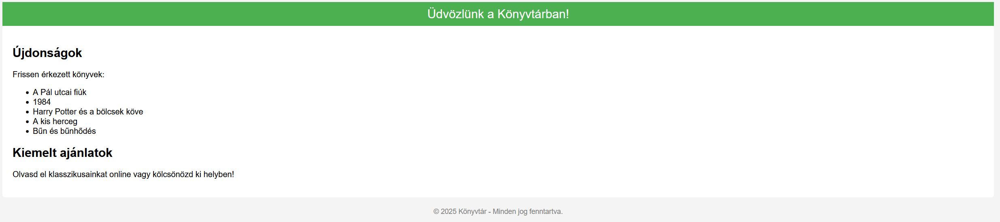

A ChessTracker alkalmazás fejlesztése során mélyreható ismereteket szereztem a C# és WinForms technológiákban. Megtanultam, hogyan lehet külső API-kat (Lichess API) integrálni egy asztali alkalmazásba, aszinkron programozással (async/await) kezelni a hálózati kéréseket, valamint dinamikus felhasználói felületet létrehozni. Emellett gyakorlatot szereztem a Gera.Chess sakkkönyvtár használatában, a JSON adatok feldolgozásában és a PGN formátumú exportálásban. A projekt során megtapasztaltam a moduláris fejlesztés előnyeit, az eseményvezérelt programozást, valamint a többablakos alkalmazások tervezését és összehangolását.
A ChessTracker egy asztali alkalmazás, amely lehetővé teszi sakkjátszmák rögzítését, tárolását és exportálását. A program a Gera.Chess könyvtár segítségével kezeli a sakkszabályokat, a WinForms biztosítja a grafikus felületet. A ChessTracker a Lichess API segítségével képes importálni a Lichess.org-on játszott sakkjátszmákat.
Főablak (Form1) - DataGridView a játszmák listájával

Sakktábla (Form3) és lépésjegyzék (Form5) egymás mellett


Lichess API import működés közben

A Lichess API segítségével játszmák importálhatók: elod0 legutóbbi játszmáinak betöltése
Játszma hozzáadása

Játszma hozzáadása – adatok megadása
A ChessTracker egy komplex, több modulból álló asztali alkalmazás, amely bemutatja a C# és WinForms technológiákban szerzett jártasságomat. A projekt során sikeresen integráltam a Lichess API-t, megvalósítottam a játszmák PGN formátumba történő exportálását.
Főbb funkciók:
A projekt során egy könyvkezelő asztali alkalmazást készítettem, amelyben elmélyítettem a C# programozási ismereteimet. Megtanultam osztályokat és tulajdonságokat használni, valamint több űrlapos (multi-form) alkalmazásokat készíteni Windows Forms környezetben. Gyakorlatot szereztem az eseményvezérelt programozásban, az adatok listában történő kezelésében, valamint a felhasználói felület és az adatok közötti kapcsolat kialakításában. Emellett megismerkedtem a fájlkezeléssel és az adatbázis-kezeléssel is, beleértve a MySQL adatbázishoz való csatlakozást és az adatok mentését.
Az alkalmazás egy egyszerű könyvtárkezelő rendszer, amely lehetővé teszi könyvek hozzáadását, szerkesztését és törlését. A könyvek adatai (cím, szerző, műfaj, kiadás dátuma, oldalszám és értékelés) egy közös listában kerülnek tárolásra, amely a felhasználói műveletek hatására dinamikusan frissül.
Főablak (Form1) - könyvek listája

A program több különálló ablakból áll. A főablakban megjelenik a könyvek listája, míg egy külön űrlapon lehet új könyvet hozzáadni. Az alkalmazás támogatja a könyvek szerkesztését is, ahol a felhasználó módosíthatja a kiválasztott könyv adatait.
Könyv hozzáadása (Form2)

A rendszer képes az adatok fájlba mentésére és fájlból történő betöltésére, valamint egy HTML oldal generálására, amelyben a könyvek listája jelenik meg. Emellett az alkalmazás MySQL adatbázissal is kapcsolatot létesít, így az adatok külső adatbázisba is menthetők.
A könyvtár adatbázis E-K diagramja

Generált HTML oldal megjelenítése
